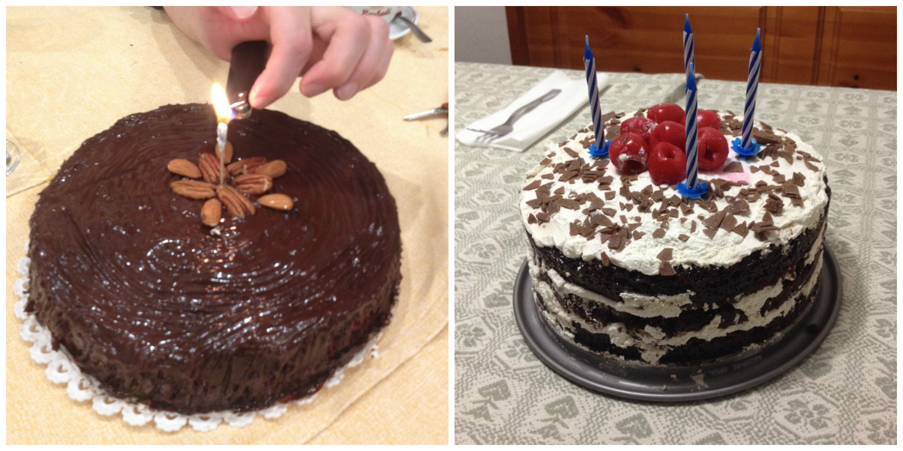
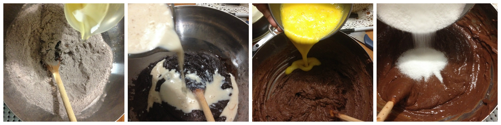
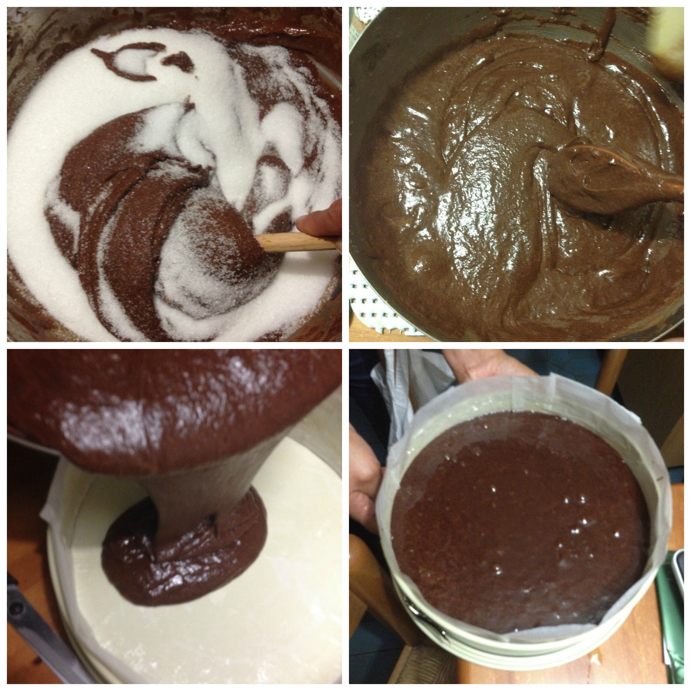
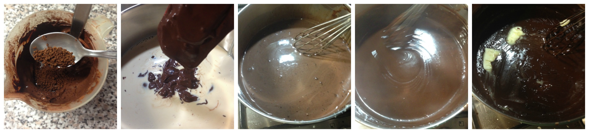
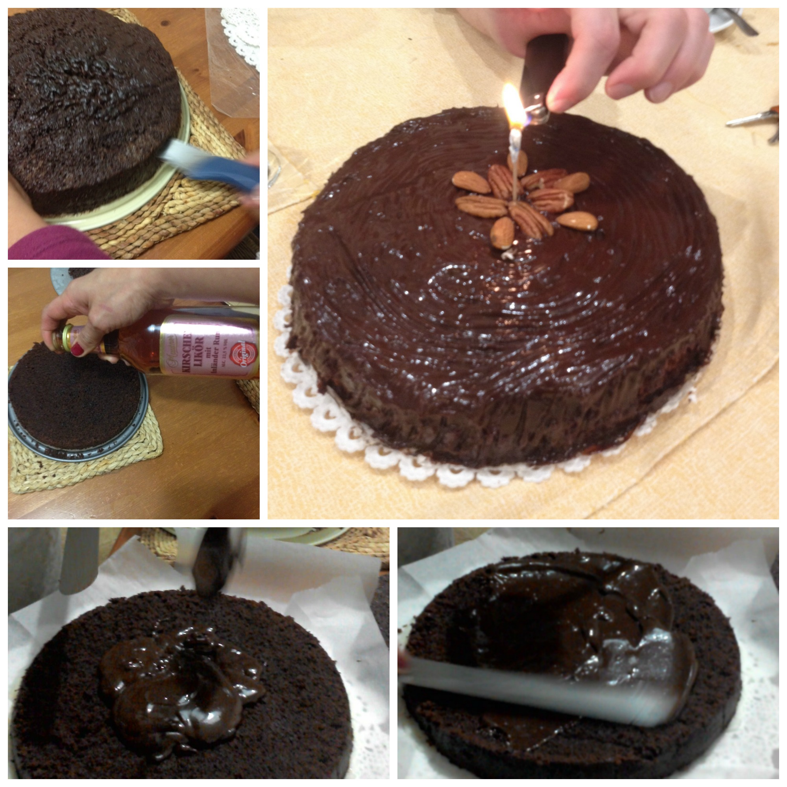
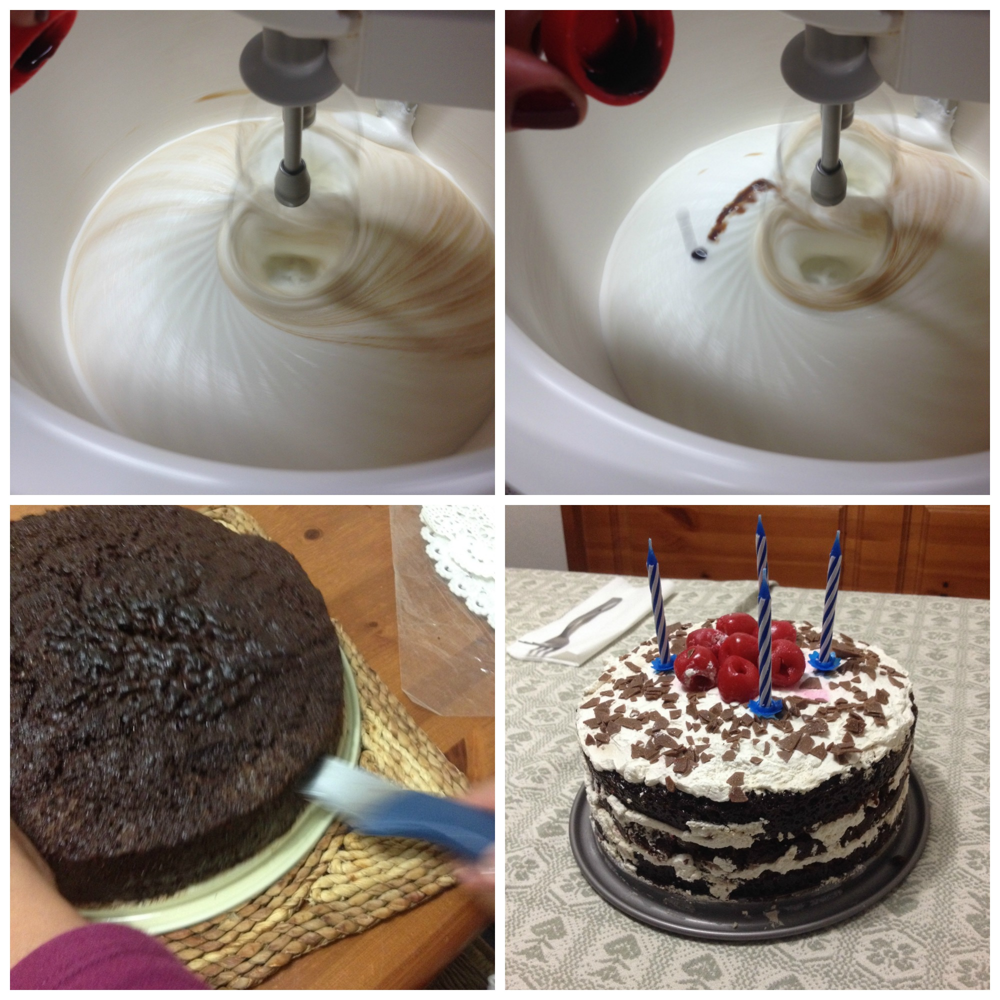

Poema de chocolate (Chocolate poem cake)¶

- Serves: +8
- Type: dessert
Background¶
This cake is my masterpiece. During years I have baked this super-tasty cake for parties or especial occasions and everybody was delighted with it. I learnt to prepare this cake for my 9th birthday - my mom gave me a hand of course - Since then this cake has been a traditional birthday cake in my family and sometimes my friends ask for it as birthday gift. It is a simple cake and can be decorated with chocolate fudge (option 1) or with whipped cream, dry fruits. Also this recipe can be used to make muffins or cupcakes with chocolate cream or a vanilla cream. During my university days these muffins help me especially during my AI classes and made me popular around the campus. I have to warn you, this cake is addictive.
Tips¶
I recommend to prepare the baking tin in advance (between 24 cm - 28 cm diameter, it is better if you can use a detachable one) using baking paper (wax paper) and to measure all the ingredients also before preparing the cake. I usually use a wooden spoon (that has been used exclusively for sweet food) and when mixing the ingredients the secret is to stir always at the same direction (clockwise or counter clockwise). You can also use instead or sweet cacao the bitter one and kirsch liquor to make the cake even tastier.
Ingredients¶
Cake
- 3 cups flour
- 3 teaspoon baking powder
- 1 teaspoon baking soda
- 1 teaspoon salt
- 1 cup cacao powder
- 1 1/3 cup oil (not olive oil!)
- 2 cups fresh milk (UHT)
- 2 tablespoon vanilla extract
- 2 tablespoon white vinegar
- 3 eggs ( I also try without them and the result was good, the cake was only shorter)
OPTION1: Chocolate fudge
- 1/4 just boiled water
- 1 can condensed milk
- 1 can evaporated milk
- 1 cup cacao powder (bitter or sweet... or 1/2 of both)
- 1 tablespoon instantaneous coffee (e.g. Nescafe)
- 2 tablespoons butter
- dry fruits: as pecan nuts, walnut for decoration.
OPTION2: Whipped cream
- 250 sweet liquid cream (I used vegetable one)
- 1 teaspoon vanilla extract.
- Berries: as strawberries, raspberries, blackberries, cherries for decoration
Steps¶
Cake¶
Sift 3 times all the dry ingredients (flour, cacao, baking powder, baking soda & salt).
Apart, beat the eggs in a separate bowl.
Mix the milk with vanilla and white vinegar.
Pour the oil into the the dry ingredients bowl and mix very well with the wooden spoon.
Pour the milk into the mixture, mix
Pour the beaten eggs, mix
Add the sugar to the mixture, in this case stir lightly, the sugar doesn’t have to be completely incorporated in the mixture.
Mixing the ingredients
Pour the mixture in the baking tin and bake in a pre-heated oven for 1 hour (after 30 minutes you can check approx. how much time is necessary; use a wooden stick or a toothpick), in case cover it with aluminium foil if you notice that the top part is getting burned. After the cake is baked, remove it from the oven and keep it cold before to proceed with decoration.
Baking the cake
Once the cake is cold, cut the cake in half or in 3 parts, pour some kirsch liquor (or other liquor) on it and use the decoration according to your taste.
Chocolate fudge¶
To prepare the chocolate fudge you need a bit of patience. It is necessary to stir it continuously for a least 15 minutes with low heat. You have to be so careful and you must watch out that it doesn’t stick to the fund of the pot. You will understand that it is ready when it become dense or when you will see the fund of the pot. Use a wooden spoon (exclusively for sweet food). If you have some left over, try the fudge with some strawberries or with sliced bread, and I assure that this is much tastier than nutella.
Dissolve the cacao powder in 1/4 hot water - if it is necessary use a bit more.
In a pot (preferably one with a thick fund) mix both condensed and evaporated milk, the instantaneous coffee and the vanilla.
Add the dissolved cacao and cook with low heat, stirring continuously till the mix will be dense or that you can see the fund of the pot.
Cover the cake (or each half of it) and decorate according to your taste.
Preparing the Chocolate fudge
Decorating the cake with the chocolate fudge
Whipped cream¶
Fridge the cream for a few hours before to use it.
Put the cream in a mixer, add the vanilla extract
Whip the cream according to your taste (for this cake I prefer when it is stiffly).
Add the whipped cream to each part of the cake (if you cut it), add if you want some berries and decorate with a pastry bag.
Whipping the cream and decorating the cake
Can be served with¶
A nice glass of dry wine and good company.